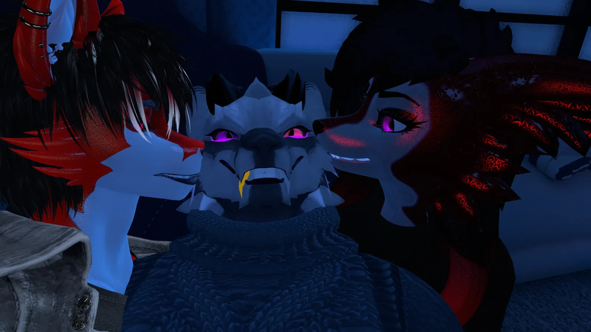
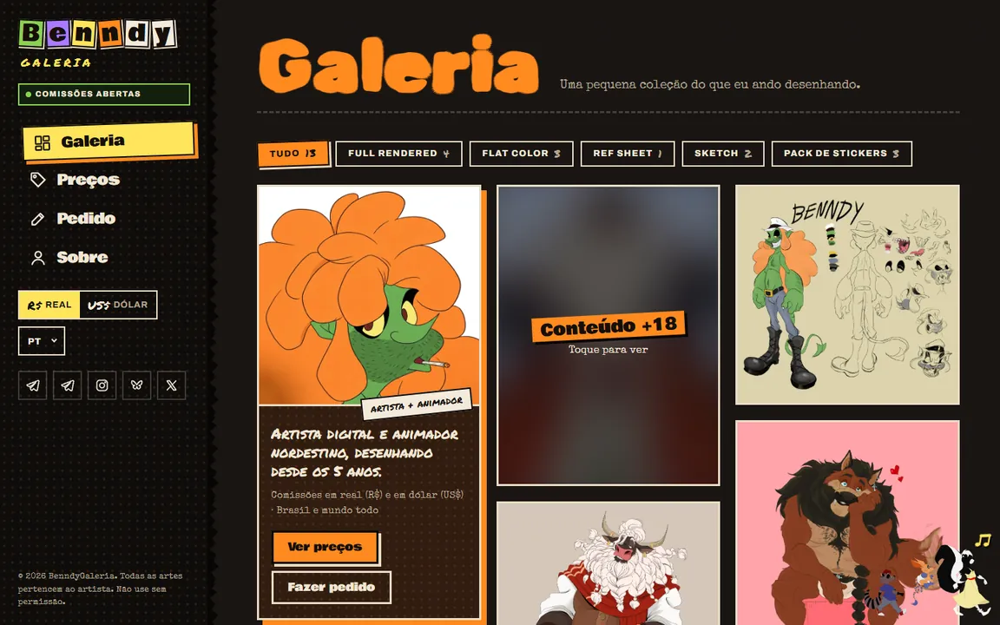
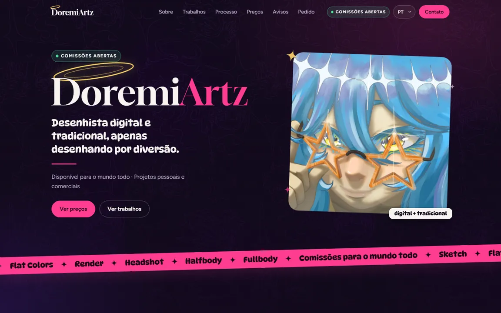
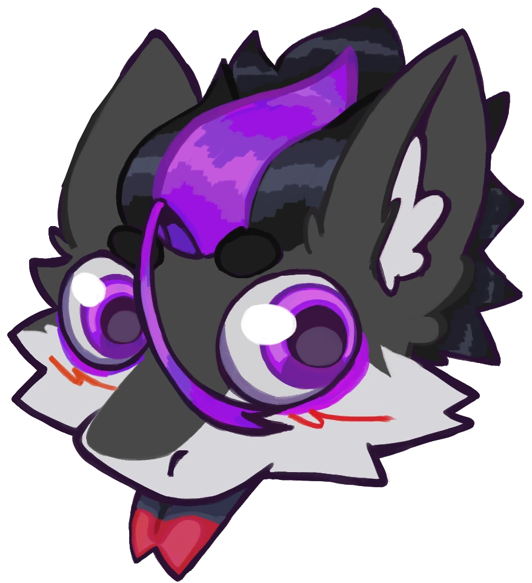
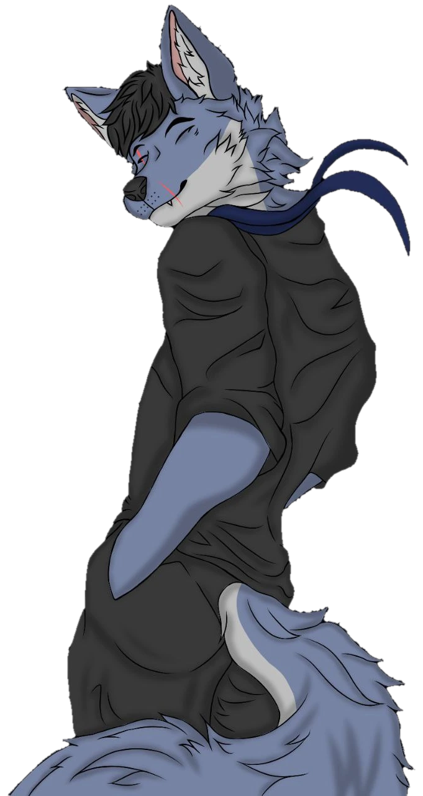

Discord e grupo no VRChat
NVSB Studio's
Eu, o Vortex e o Neesky fazemos avatares 100% do zero, sem IA e feitos totalmente à mão. No servidor também rola modelagem de roupas e criação de assets.
Sr_BjornVortexNeesky
Geminiano, furry desde os 8 anos e uma Lua que brilha por conta própria. Trabalho com TI e adoro ajudar quem precisa.
熊士Bjørn quer dizer "urso" nas línguas nórdicas. Em japonês, 熊 é urso e 士 é guerreiro: meus kanjis favoritos, junto com 愛, amor.
Oi, eu sou o Bjørn! Nasci na Rússia em 22 de maio e vim para o Brasil ainda recém-nascido, então sou brasileiro de coração desde o primeiro dia. Geminiano de carteirinha: curioso, falante e com mil ideias ao mesmo tempo. Faço parte da comunidade furry desde os 8 anos de idade e nunca mais saí. Foi ali que aprendi a me expressar e fiz amigos que carrego até hoje.
Meus personagens contam essa história. O Lupus Wolf, o lobo azul-acinzentado, nasceu em 2011 e me acompanhou por mais de uma década. Em 2026 chegou o Sr_Bjorn, de pelagem preta e roxo neon, que hoje é o meu OC principal.
Também gosto de criar: ajudo em roteiros e vídeos e dou vida a personagens com a minha voz. Faz tempo que eu brinco com isso: faço dublagem por hobby.
Sou ESTJ-T, o Executivo. No começo posso parecer meio introvertido, mas eu me solto aos poucos e logo viro aquele que ama animar as pessoas e puxar todo mundo pra cima. Por um tempo estudei Psicologia, que era a área que eu ia seguir; a tecnologia acabou falando mais alto, mas isso nunca me impediu de ouvir. Se você precisar de um conselho ou de ajuda com uma situação complicada, pode vir conversar comigo.
O que eu mais gosto mesmo é ajudar pessoas. Sou formado em Ciência da Computação, estou cursando Análise e Desenvolvimento de Sistemas e trabalho com TI em geral. Um PC travando, um notebook esquentando, alguém montando o primeiro full body no VRChat: eu dou um jeito, presencialmente aqui em Piracicaba, pelo Parsec ou recebendo a máquina pelos Correios. Também faço sites e estou começando a criar assets para avatares.
Nos tempos livres eu amo escutar música ou estudar alguma coisa nova. Também gosto de registrar momentos com fotos e gravações: paisagens bonitas, animais, insetos curiosos e flores sempre acabam parando no meu celular. Sou apaixonado por adrenalina e tecnologia e gamer de vários jogos, mas quem me encontra mesmo é no VRChat.
Me segue, me adiciona ou manda mensagem. Respondo mais rápido no Telegram e no WhatsApp.
Portfólio de artista, página de comissões ou um cantinho pessoal como este aqui. Eu desenho e programo tudo à mão, do jeito que você imaginar. E depois que o site fica pronto, eu não cobro a manutenção.
A manutenção fica por minha conta: eu não cobro por ela.

BenndyGaleriaGaleria, preços em real e em dólar e pedido de comissão do Benndy, artista digital e animador nordestino.Visitar ↗
DoremiArtzPortfólio, processo, preços e pedidos do Doremi, desenhista digital e tradicional.Visitar ↗E este site que você está vendo agora também fui eu que fiz.
Junto com o Vortex e o Neesky eu faço avatares para VRChat, e estou começando a criar os meus próprios assets.

Eu, o Vortex e o Neesky fazemos avatares 100% do zero, sem IA e feitos totalmente à mão. No servidor também rola modelagem de roupas e criação de assets.
Sou novato nessa área e estou prestes a começar a fazer assets para avatares. Os primeiros vão sair na minha Gumroad.
Trabalho com TI todos os dias e faço manutenção de PCs e notebooks. O atendimento presencial é aqui em Piracicaba (SP). Mora em outra cidade e quer que eu cuide da sua máquina mesmo assim? É só me enviar pelos Correios, ou resolver remoto pelo Parsec.
Clique em qualquer cor para copiar o código hex. As cores foram tiradas direto dos ref sheets e dos modelos de cada personagem.

Pelagem preta com sombras em grafite, peito e focinho brancos. O roxo neon aparece na franja e desce em degradê até a ponta da cauda.
+18 A pasta pode conter artes adultas. Acesse só se for maior de idade.

Lobo de pelagem azul-acinzentada, barriga clara e cabelo escuro. Olhos azul-petróleo e cachecol azul-marinho.
+18 A pasta pode conter artes adultas. Acesse só se for maior de idade.
Artista? Fique à vontade para usar essas paletas como referência em comissões e fanarts. Na dúvida sobre algum detalhe, me chama no Telegram que eu mando o ref completo.
Especificações exatas do meu PC, lidas direto do Windows, e o kit que eu uso no VRChat.
Um jogo que eu fiz, o celular que registra tudo e os periféricos RGB do PC.
A Protogen contra a matilha corrompida: zumbis furries sobem dos portais, e cada onda é mais forte que a anterior. Os pontos compram armas, portas e módulos, e a Forja melhora as armas até o Mk IV, com fogo, gelo e choque.
W A S D anda · clique atira · Esc pausa e solta o mouse
Esse jogo precisa de teclado e mouse: abre o site no computador pra jogar 💻
Os trackers que eu uso todo dia no VRChat e o artista que dá vida aos meus personagens.
Os trackers de full body que eu uso no VRChat. Fabricados no Brasil e compatíveis com SlimeVR.
Comprando com o cupom do Yoshiro você ganha o desconto e ainda leva um mimo de presente.
Desenhista digital e tradicional, apenas desenhando por diversão.
É ele quem dá vida aos meus personagens. Artista brasileiro que transita entre o fofo e o sombrio e aceita pedidos do mundo todo, para projetos pessoais ou comerciais.
Ver portfólio e preçosA Lua perdeu o seu Sol
numa tarde sem eclipse,
sem estrondo e sem adeus,
como quem solta uma mão
achando que é só por um instante.
E a Lua ficou girando no escuro,
contando os dias pelas marés,
decorando o nome das estrelas
que antes ela nem precisava ver.
Dizem que a Lua não tem luz,
que só devolve o brilho que recebe.
Talvez seja verdade.
Mas ninguém pergunta o que ela sente
quando ilumina a noite inteira
com a luz de quem já foi embora.
Ela segue vagando sozinha pelo céu,
crescente, cheia, minguante, nova,
e toda noite alguém lá embaixo
levanta os olhos e encontra nela
o caminho de volta,
sem saber que ela mesma
ainda procura o seu.
Porque até a Lua nova,
essa que ninguém consegue ver,
não é ausência:
é o céu segurando o fôlego
antes de ela voltar a brilhar.
Feito por: Sr_Bjorn
Sr_Bjørn: piloto autorizado. Bem-vindo à NERV.
God's in his heaven. All's right with the world. toque em qualquer lugar pra fechar